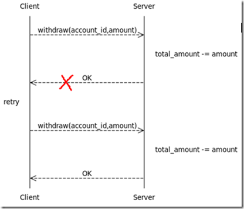

前言
基于HTTP协议的Web API是时下最为流行的一种分布式服务提供方式。无论是在大型互联网应用还是企业级架构中，我们都见到了越来越多的SOA或RESTful的Web API。为什么Web API如此流行呢？我认为很大程度上应归功于简单有效的HTTP协议。
HTTP协议是一种分布式的面向资源的网络应用层协议，无论是服务器端提供Web服务，还是客户端消费Web服务都非常简单。再加上浏览器、Javascript、AJAX、JSON以及HTML5等技术和工具的发展，互联网应用架构设计表现出了从传统的PHP、JSP、ASP.NET等服务器端动态网页向Web API + RIA（富互联网应用）过渡的趋势。Web API专注于提供业务服务，RIA专注于用户界面和交互设计，从此两个领域的分工更加明晰。在这种趋势下，Web API设计将成为服务器端程序员的必修课。然而，正如简单的Java语言并不意味着高质量的Java程序，简单的HTTP协议也不意味着高质量的Web API。要想设计出高质量的Web API，还需要深入理解分布式系统及HTTP协议的特性。
幂等性定义
本文所要探讨的正是HTTP协议涉及到的一种重要性质：幂等性(Idempotence)。在HTTP/1.1规范中幂等性的定义是：
Methods can also have the property of “idempotence” in that (aside from error or expiration issues) the side-effects of N > 0 identical requests is the same as for a single request.
从定义上看，HTTP方法的幂等性是指一次和多次请求某一个资源应该具有同样的副作用。幂等性属于语义范畴，正如编译器只能帮助检查语法错误一样，HTTP规范也没有办法通过消息格式等语法手段来定义它，这可能是它不太受到重视的原因之一。但实际上，幂等性是分布式系统设计中十分重要的概念，而HTTP的分布式本质也决定了它在HTTP中具有重要地位。
分布式事务 vs 幂等设计
为什么需要幂等性呢？我们先从一个例子说起，假设有一个从账户取钱的远程API（可以是HTTP的，也可以不是），我们暂时用类函数的方式记为：
bool withdraw(account_id, amount) |
withdraw的语义是从account_id对应的账户中扣除amount数额的钱；如果扣除成功则返回true，账户余额减少amount；如果扣除失败则返回false，账户余额不变。值得注意的是：和本地环境相比，我们不能轻易假设分布式环境的可靠性。一种典型的情况是withdraw请求已经被服务器端正确处理，但服务器端的返回结果由于网络等原因被掉丢了，导致客户端无法得知处理结果。如果是在网页上，一些不恰当的设计可能会使用户认为上一次操作失败了，然后刷新页面，这就导致了withdraw被调用两次，账户也被多扣了一次钱。如图1所示：

这个问题的解决方案一是采用分布式事务，通过引入支持分布式事务的中间件来保证withdraw功能的事务性。分布式事务的优点是对于调用者很简单，复杂性都交给了中间件来管理。缺点则是一方面架构太重量级，容易被绑在特定的中间件上，不利于异构系统的集成；另一方面分布式事务虽然能保证事务的ACID性质，而但却无法提供性能和可用性的保证。
另一种更轻量级的解决方案是幂等设计。我们可以通过一些技巧把withdraw变成幂等的，比如：
int create_ticket() |
create_ticket的语义是获取一个服务器端生成的唯一的处理号ticket_id，它将用于标识后续的操作。idempotent_withdraw和withdraw的区别在于关联了一个ticket_id，一个ticket_id表示的操作至多只会被处理一次，每次调用都将返回第一次调用时的处理结果。这样，idempotent_withdraw就符合幂等性了，客户端就可以放心地多次调用。
基于幂等性的解决方案中一个完整的取钱流程被分解成了两个步骤：1.调用create_ticket()获取ticket_id；2.调用idempotent_withdraw(ticket_id, account_id, amount)。虽然create_ticket不是幂等的，但在这种设计下，它对系统状态的影响可以忽略，加上idempotent_withdraw是幂等的，所以任何一步由于网络等原因失败或超时，客户端都可以重试，直到获得结果。如图2所示：

和分布式事务相比，幂等设计的优势在于它的轻量级，容易适应异构环境，以及性能和可用性方面。在某些性能要求比较高的应用，幂等设计往往是唯一的选择。
HTTP的幂等性
HTTP协议本身是一种面向资源的应用层协议，但对HTTP协议的使用实际上存在着两种不同的方式：一种是RESTful的，它把HTTP当成应用层协议，比较忠实地遵守了HTTP协议的各种规定；另一种是SOA的，它并没有完全把HTTP当成应用层协议，而是把HTTP协议作为了传输层协议，然后在HTTP之上建立了自己的应用层协议。本文所讨论的HTTP幂等性主要针对RESTful风格的，不过正如上一节所看到的那样，幂等性并不属于特定的协议，它是分布式系统的一种特性；所以，不论是SOA还是RESTful的Web API设计都应该考虑幂等性。下面将介绍HTTP GET、DELETE、PUT、POST四种主要方法的语义和幂等性。
HTTP GET方法用于获取资源，不应有副作用，所以是幂等的。比如：GET http://www.bank.com/account/123456，不会改变资源的状态，不论调用一次还是N次都没有副作用。请注意，这里强调的是一次和N次具有相同的副作用，而不是每次GET的结果相同。GET http://www.news.com/latest-news这个HTTP请求可能会每次得到不同的结果，但它本身并没有产生任何副作用，因而是满足幂等性的。
HTTP DELETE方法用于删除资源，有副作用，但它应该满足幂等性。比如：DELETE http://www.forum.com/article/4231，调用一次和N次对系统产生的副作用是相同的，即删掉id为4231的帖子；因此，调用者可以多次调用或刷新页面而不必担心引起错误。
比较容易混淆的是HTTP POST和PUT。POST和PUT的区别容易被简单地误认为“POST表示创建资源，PUT表示更新资源”；而实际上，二者均可用于创建资源，更为本质的差别是在幂等性方面。在HTTP规范中对POST和PUT是这样定义的：
The POST method is used to request that the origin server accept the entity enclosed in the request as a new subordinate of the resource identified by the Request-URI in the Request-Line …… If a resource has been created on the origin server, the response SHOULD be 201 (Created) and contain an entity which describes the status of the request and refers to the new resource, and a Location header.
The PUT method requests that the enclosed entity be stored under the supplied Request-URI. If the Request-URI refers to an already existing resource, the enclosed entity SHOULD be considered as a modified version of the one residing on the origin server. If the Request-URI does not point to an existing resource, and that URI is capable of being defined as a new resource by the requesting user agent, the origin server can create the resource with that URI.
POST所对应的URI并非创建的资源本身，而是资源的接收者。比如：POST http://www.forum.com/articles的语义是在http://www.forum.com/articles下创建一篇帖子，HTTP响应中应包含帖子的创建状态以及帖子的URI。两次相同的POST请求会在服务器端创建两份资源，它们具有不同的URI；所以，**POST方法不具备幂等性**。而PUT所对应的URI是要创建或更新的资源本身。比如：PUT http://www.forum/articles/4231的语义是创建或更新ID为4231的帖子。对同一URI进行多次PUT的副作用和一次PUT是相同的；因此，**PUT方法具有幂等性。**
在介绍了几种操作的语义和幂等性之后，我们来看看如何通过Web API的形式实现前面所提到的取款功能。很简单，用POST /tickets来实现create_ticket；用PUT /accounts/account_id/ticket_id?amount=xxx来实现idempotent_withdraw。值得注意的是严格来讲amount参数不应该作为URI的一部分，真正的URI应该是/accounts/account_id/ticket_id，而amount应该放在请求的body中。这种模式可以应用于很多场合，比如：论坛网站中防止意外的重复发帖。
如何防范 POST 重复提交
HTTP POST 操作既不是安全的，也不是幂等的（至少在 HTTP 规范里没有保证）。当我们因为反复刷新浏览器导致多次提交表单，多次发出同样的 POST 请求，导致远端服务器重复创建出了资源。
为了避免这种情形，有以下几种解决方法：
- 上述所说的幂等性设计；
- PRG(Post/Redirect/Get模式)：服务器端收到 POST 请求，在操作成功后必须 302 跳转到另外一个页面，这样即使用户刷新页面，也不会重复提交表单。
- 用JavaScript的方式在客户端处理：表单提交之后，将提交按钮设置为不可用；
- 后端 WebService 一定要做到幂等性：
- 使用Session设置令牌。客户端请求页面时，服务器为每次产生的Form表单分配唯一的随机标识号，并且在orm的一个隐藏字段中设置这个标识号，同时在当前用户的Session中保存这个标识号。当提交表单时，服务器比较hidden和session中的标识号是否相同，相同则继续，处理完后清空Session，否则服务器忽略请求。注意：恶意用户可利用这一性质，不断重复访问页面，以致Session中保存的标识号不断增多，最终严重消耗服务器内存。可以采用在Session中记录用户发帖的时间，然后通过一个时间间隔来限制用户连续发帖的数量来解决这一问题。
- 在数据库添加唯一字段。在数据库建表的时候在ID字段添加主键约束，账号，名称的信息添加唯一性约束。确保数据库只可以添加一条数据。